ECT/UFRN
Uma tarefa comum em aplicações de Visão Computacional é identificar algo específico em uma cena:
Em ambos os casos, podemos buscar diretamente por um padrão específico de intensidades na imagem
Nesta aula, será estudada a técnica de casamento por blocos, conhecida na literatura como template matching ou block matching.
Imagem:
Template:
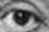
Dada uma imagem, achar um determinado padrão (template)
Como proceder?
Cena:
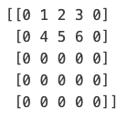
Padrão:
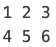
Dada uma imagem, achar um determinado padrão (template)
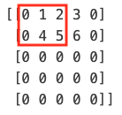
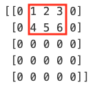
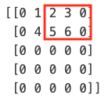
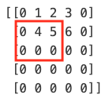
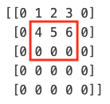
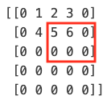
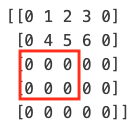
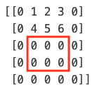
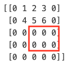
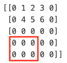
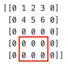
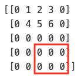
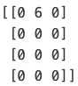
Há algum problema com esta abordagem? Se sim, quais?
O template precisa ser exatamente igual à sua contraparte na imagem. Isso torna o algoritmo pouco prático.
Como podemos melhorá-lo?
É preciso uma métrica de comparação:
Primeira métrica: correlação normalizada entre a janela da imagem I_w e o template T
corr'(x,y) = \frac{\sum I_w(x+k, y+l)T(k,l)}{\| I_w(x+k,y+l) \|\| T(k,l) \|},
calculada para todas as posições (k,l) \in w da janela da imagem centrada em (x,y).
Para mostrar que esta métrica fornece uma medida de similaridade:
A região da imagem I_w contida na janela forma o vetor
\mathbf{v_1} = [I(x,y), I(x,y+1), ..., I(x,y+l), ..., I(x+k,y+l)],
assim como o template T forma o vetor
\mathbf{v_2} = [T(0,0), T(0,1), ..., T(0,l-1), ..., T(k-1,l-1)].
Os dois vetores fazem parte do espaço de dimensão k \times l.
Uma medida de similaridade entre vetores é o ângulo entre eles,
cos \theta = \frac{\mathbf{v_1} . \mathbf{v_2}}{\|\mathbf{v1}\| \| \mathbf{v2}\|}
que equivale a
corr'(x,y) = \frac{\sum I_w(x+k, y+l)T(k,l)}{\| I_w(x+k,y+l) \|\| T(k,l) \|}
calculado em uma janela w centrada no pixel (x,y)
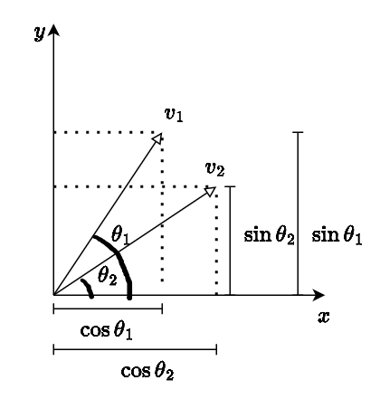
Para ilustrar o conceito, considere os vetores unitários \mathbf{v_1} e \mathbf{v_2} em \mathbb{R}^2
É possível ver que o ângulo \theta entre os vetores \mathbf{v_1} e \mathbf{v_2} é dado por
\begin{aligned} \theta &= \theta_1 - \theta_2 =\\ cos \theta &= cos (\theta_1 - \theta_2) =\\ cos \theta &= cos(\theta_1) cos(\theta_2) + sen(\theta_1) sen(\theta_2) \end{aligned}
Observe que cos(\theta_i) e sen(\theta_i) são as componentes x_i e y_i dos vetores unitários dos triângulos retângulos da figura anterior.
Então
\begin{aligned} cos \theta &= \frac{x_1}{\|\mathbf{v_1}\|}\frac{x_2}{\|\mathbf{v_2}\|} + \frac{y_1}{\|\mathbf{v_1}\|}\frac{y_2}{\|\mathbf{v_2}\|} = \frac{\mathbf{v_1} .\mathbf{v_2}}{\|\mathbf{v_1}\| \|\mathbf{v_2}\|} \\ &= \frac{\sum I_w(x+k, y+l)T(k,l)}{\| I_w(x+k,y+l) \|\| T(k,l) \|} \end{aligned}
Observe que o cosseno está sendo calculado entre dois vetores de norma unitária:
\operatorname*{arg\,max}_{(x,y)} corr'(x,y) = \frac{\sum I_w(x+k, y+l)T(k,l)}{\| I_w(x+k,y+l) \|\| T(k,l) \|}
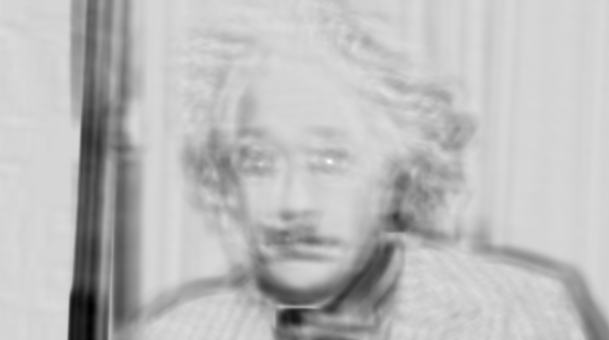
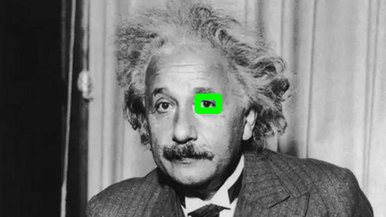
Mapa de similaridade (à esquerda) e retângulo centrado na posição de maior similaridade.
Vetores não unitários também podem ser usados na correlação:
corr(x,y) = \sum I_w(x+k, y+l)T(k,l)
Por que a maior resposta está em uma posição incorreta? \rightarrow a correlação não-normalizada tem o produto interno alto em regiões mais claras da imagem
Segunda métrica: soma das diferenças quadráticas (Sum of Squared Differences, SSD) entre a janela da imagem I_w e o template T:
SSD(x,y) = \sum [I_w(x+k, y+l) - T(k,l)]^2,
calculada para todas as posições (k,l) \in w da janela da imagem centrada em (x,y).
Após calcular SSD(x,y) para todas as posições válidas (x,y) da imagem, o template T deverá estar na posição que contiver a menor diferença quadrática:
\operatorname*{arg\,min}_{(x,y)} SSD(x,y) = \sum [I_w(x+k, y+l) - T(k,l)]^2
A expansão da minimização é dada por
\begin{aligned} \operatorname*{arg\,min}_{(x,y)} SSD(x,y) &= \sum [I_w(x+k, y+l) - T(k,l)]^2\\ &= \sum I^2_w(x+k, y+l)\\ &- 2\sum I_w(x+k, y+l)T(k,l)\\ &+ \sum T^2(k,l) \end{aligned}
Então,
\begin{aligned} \operatorname*{arg\,min}_{(x,y)} SSD(x,y) &= \sum [I_w(x+k, y+l) - T(k,l)]^2\\ &= \sum I^2_w(x+k, y+l)\\ &- 2\sum I_w(x+k, y+l)T(k,l) \end{aligned}
A métrica SSD também possui uma versão normalizada. Após descartar o termo \sum T^2(k,l), ela pode ser dividida por \sum I^2_w, resultando em:
\operatorname*{arg\,min}_{(x,y)} SSD(x,y) = 1 - \frac{2\sum I_w(x+k, y+l)T(k,l)}{\sum I^2_w(x+k, y+l)}
Minimizar a equação anterior equivale a maximizar sua versão normalizada:
\operatorname*{arg\,max}_{(x,y)} SSD'(x,y) = \frac{\sum I_w(x+k, y+l)T(k,l)}{\sum I^2_w(x+k, y+l)}
Importante \rightarrow podemos normalizar o SSD de duas formas:
Esta segunda forma é utilizada, por exemplo, pela OpenCV:
\operatorname*{arg\,min}_{(x,y)} SSD(x,y) = \sum \frac{[I_w(x+k, y+l) - T(k,l)]^2}{\| [I_w(x+k, y+l) \| \|T(k,l)] \|}
Lembre-se: para o SSD, o template deverá estar na posição de menor valor
Lembre-se: para o SSD', o template deverá estar na posição de menor valor
Considere o template à esquerda com a correlação calculada na região da imagem com intensidade uniforme v:
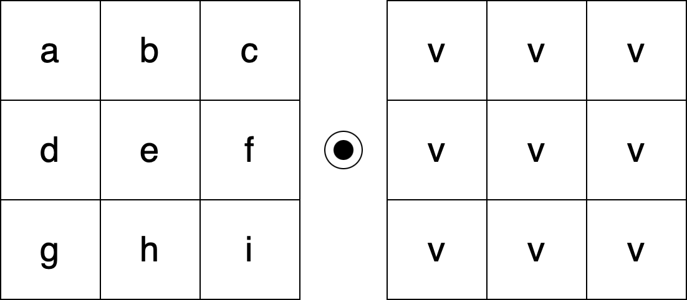
=(a+b+c+d+e+f+g+h+i)*v
Agora, a região da imagem tem intensidade 2v:
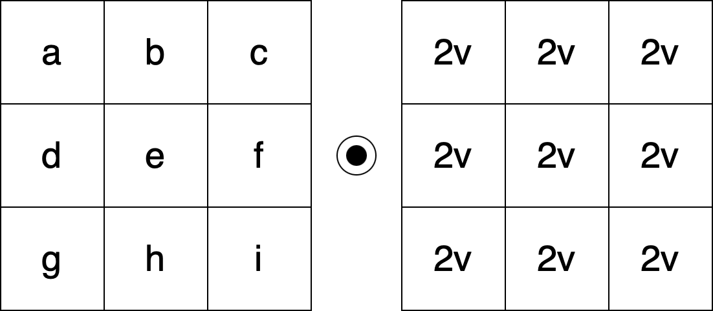
=(a+b+c+d+e+f+g+h+i)*2v
Neste último caso:
Como solução, calcular a correlação após:
Correlação normalizada e com média subtraída:
\bar{corr}(x,y) = \frac{\sum [I_w(x+k, y+l) - \bar{I}_w][T(k,l) - \bar{T}]}{\| [I_w(x+k,y+l)- \bar{I}_w] \|\| [T(k,l) - \bar{T}]\|}
\bar{I}_w é a média da janela sob o template e \bar{T} é a média do template
SSD normalizada e com média subtraída:
\bar{SSD}(x,y) = \frac{\sum [I_w(x+k, y+l) - \bar{I}_w][T(k,l) - \bar{T}]}{\sum [I^2_w(x+k, y+l) - \bar{I}_w]}
Note que, após remover a média, a correlação (não-normalizada) é corrigida
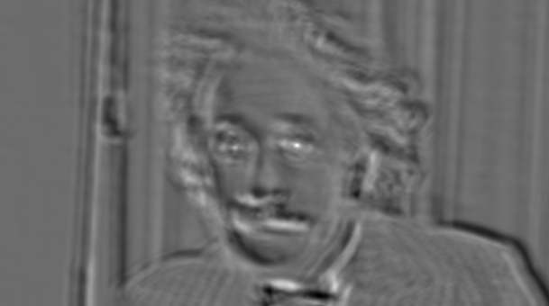
Correlação normalizada após remover a média:
SSD após remover a média:
SSD normalizado após remover a média:
As técnicas de template matching apresentadas presumem que as imagens diferem apenas por:
Caso estas premissas não sejam verdadeiras: o método não terá sucesso
Para mudanças de escala e rotação:
Mudanças de perspectiva requerem outras técnicas, abordadas mais adiante no curso
Função da OpenCV relacionadas ao tópico da aula:
cv.matchTemplate
Constantes da função cv.matchTemplate (métricas):
TM_CCORR: corr(x,y)TM_CCORR_NORMED: corr'(x,y)TM_SQDIFF: SSD(x,y)TM_SQDIFF_NORMED: SSD'(x,y)TM_CCOEFF: corr(x,y) subtraindo as médias, sem normalizarTM_CCOEFF_NORMED: \bar{corr}(x,y)Nesta aula, foi apresentada a técnica de template matching por meio de:
Visão Robótica - PPGEMECA/UFRN